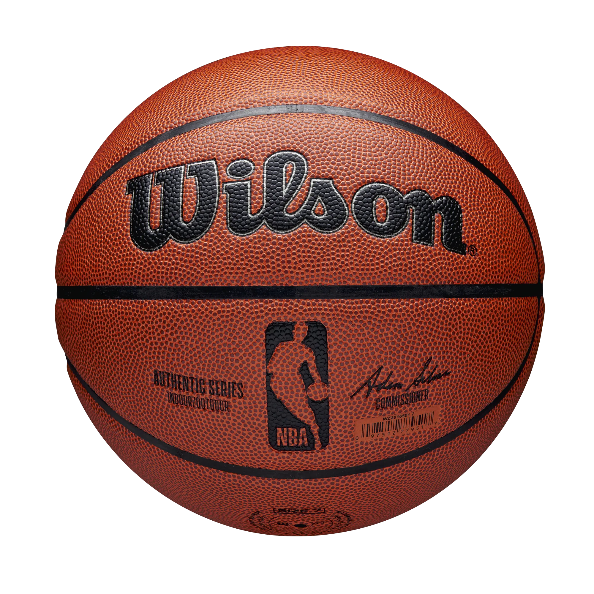

¿Qué me apasiona?
Como bien dice el titulo, me apasiona el baloncesto, un deporte que practico desde los 14 años y que me ha enseñado muchos valores.
Este es un deporte de equipo que se juega entre dos equipos de cinco jugadores cada uno. El objetivo del juego es anotar puntos lanzando la pelota a través de un aro elevado.
